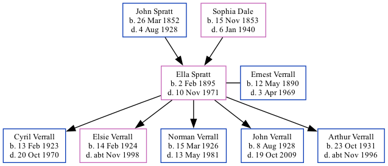

Ella Verrall (née Spratt) 1895 - 1971
[ Home ] | [ Calendar ] | [ Surnames Index ] | [ Family History ]A charwork and the daughter of John Spratt (an agricultural laborer) and Sophia Dale, Ella Spratt, the great-aunt of Nigel Horne, was born in St Nicholas-at-Wade, Kent, England on Feb 2, 18951,2,3,4,5,6,7, was baptized there on Mar 31, 1895 and married Ernest Verrall (a window cleaner with whom she had 5 children: Cyril Ernest, Elsie Amy, Norman Charles, John Leslie and Arthur George) in Thanet, Kent, England around May 19228.
Ella spent all of her life in Kent, England. Throughout her life, she lived in several places around the county: on 2 Nash Court Cottage, Nash Road, Margate on Mar 31, 190110 and on Apr 2, 191111; at Nash in Thanet on Jun 19, 19213; and on 74 Invicta Road, Margate on Sep 29, 19394, in 19699 and in 1971.
She died on Nov 10, 1971 in Bridge, Kent6.
Parents
- John was born on Mar 26, 1852
- Sophia was born on Nov 15, 1853
Children
- Cyril Ernest was born on Feb 13, 1923
- Elsie Amy was born on Feb 14, 1924
- Norman Charles was born on Mar 15, 1926
- John Leslie was born on Aug 8, 1928
- Arthur George was born on Oct 23, 1931
Citations
- 1901 England Census Online publication - Provo, UT, USA: The Generations Network, Inc., 2005.Original data - Census Returns of England and Wales, 1901. Kew, Surrey, England: The National Archives of the UK (TNA): Public Record Office (PRO), 1901. Data imaged from the National
- 1911 England Census Online publication - Provo, UT, USA: Ancestry.com Operations, Inc., 2011.Original data - Census Returns of England and Wales, 1911. Kew, Surrey, England: The National Archives of the UK (TNA), 1911. Data imaged from the National Archives, London, England.
- 1921 Census Of England & Wales - Findmypast (was age 26 and the daughter of the head of the household)
- 1939 Register - Findmypast (was the wife of the head of the household)
- England & Wales deaths 1837-2007 - Findmypast
- England & Wales, Death Index: 1984-2005 Online publication - Provo, UT, USA: The Generations Network, Inc., 2007.Original data - General Register Office. England and Wales Civil Registration Indexes. London, England: General Register Office. © Crown copyright. Published by permission of the Cont
- England & Wales, FreeBMD Birth Index, 1837-1915 Online publication - Provo, UT, USA: The Generations Network, Inc., 2006.Original data - General Register Office. England and Wales Civil Registration Indexes. London, England: General Register Office. © Crown copyright. Published by permission of the Cont
- England & Wales marriages 1837-2008 - Findmypast
- According to her husband's probate.
- 1901 England, Wales & Scotland Census - Findmypast (was age 6 and the daughter of the head of the household)
- 1911 Census for England & Wales - Findmypast (was age 16 and the daughter of the head of the household)
Media
Ella Spratt - probate

Kent, Canterbury Archdeaconry baptisms 1538-1912 - GBPRS/CANT/B/96802433
England & Wales marriages 1837-2008 - BMD/M/1922/2/AZ/001145/062
England & Wales births 1837-2006 - BMD/B/1895/1/AZ/000573/117
England & Wales deaths 1837-2007 - BMD/D/1971/4/AZ/001273/013
1901 England, Wales & Scotland Census - GBC/1901/0005521361
1911 Census for England & Wales - GBC/1911/RG14/04484/0189/4
1939 Register Transcription - TNA-R39-1756-1756B-015-18
1939 Register Transcription - TNA-R39-1756-1756B-015-17
England Births & Baptisms 1538-1975 - R_884659524
Family Tree
Generated by Ged2Site. Last updated on Jul 20, 2025